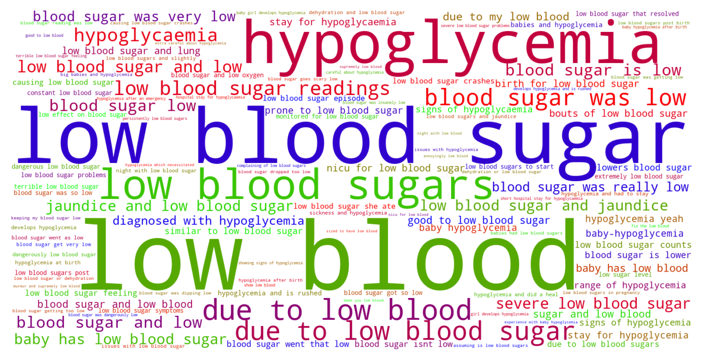
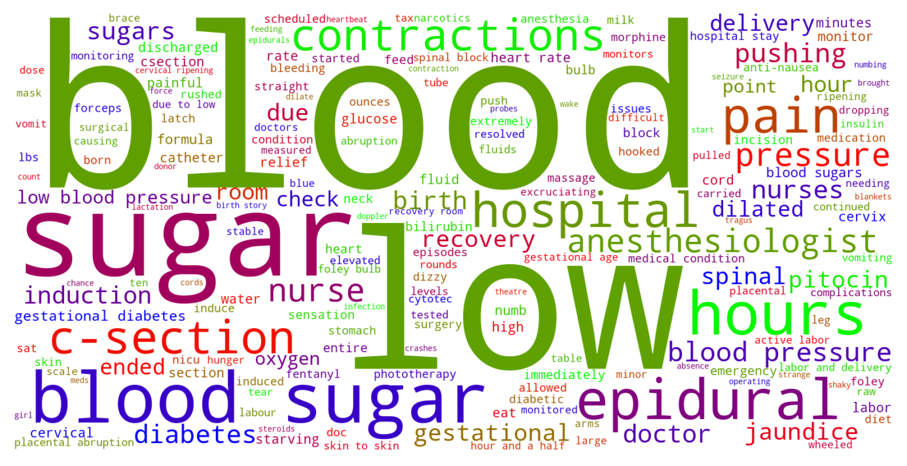

Jump to section:
Samples from Social CorpusHits per UMLS Alias on Social Corpus
Word Cloud Comparison
Embedding Space Comparison
Nearest Neighbors by Semantic Type
Related Analysed Concepts
Samples from Social Corpus
He had hypoglycemia which necessitated an 8-day NICU stay when he was born .
Confidence: 0.622. Reddit link
Unfortunately she had a tough first night with low blood sugar that couldn't be fixed with expressed colostrum , formula or gel and needed a glucose drip .
Confidence: 0.760. Reddit link
Last week , her blood sugar went that low again .
Confidence: 0.808. Reddit link
I'm hoping it was some crazy fluke due to dehydration and low blood sugar .
Confidence: 0.745. Reddit link
( Small babies are also prone to low blood sugar , btw. I don't know about jaundice . )
Confidence: 0.845. Reddit link
SIL telling me how luckily I am to have hypoglycemia because she had GD and it was * so * much harder .
Confidence: 1.000. Reddit link
My baby boy is born at 1:51 AM Friday and is since in NICU due to hypoglycemia at birth ( 0.38 , then 0.18 ..)
Confidence: 0.756. Reddit link
Lab tests show low blood counts on all fronts ( surprise , surprise ) , but so far they haven't concluded why that is or what to do about it .
Confidence: 0.645. Reddit link
There were no serious issues aside from a little jaundice and low blood sugar that resolved fairly quickly .
Confidence: 0.791. Reddit link
I don't sleep well due to the crazy itchiness so I am doubly exhausted ( I also have hypothyroidism and anemia and extremely low blood pressure ) .
Confidence: 0.775. Reddit link
Hits per UMLS Alias on Social Corpus
-
low blood sugar
292 hits
-
hypoglycemia
58 hits
-
glucose low blood
8 hits
-
hypoglycaemia
6 hits
-
low blood sugar level
1 hits
-
hypoglycemic syndrome nos
0 hits
-
hypoglycaemia nos
0 hits
-
hypoglycemia unspecified
0 hits
-
hypoglycemic disorder
0 hits
-
hypoglycaemic disorder
0 hits
-
hypoglycemia nos
0 hits
-
hypoglycaemic syndrome nos
0 hits
-
blood glucose low
0 hits
-
hypoglycemic disorder disorder
0 hits
-
hypoglycemia disorder
0 hits
-
hypoglycemic syndrome
0 hits
-
low blood glucose
0 hits
-
hypoglycaemic syndrome
0 hits
-
hypoglycemic syndrome disorder
0 hits
Word Cloud Comparison
Keywords matching C0020615
Keywords matched against concept. Word size represents frequency.
Keywords co-occurring with C0020615
Co-occurrence is measured at the document-level (i.e. Reddit submissions). Frequencies are normalized to account for keywords common to all CUIs.
Embedding Space Comparison
T-SNE comparison for word embeddings learned from medical domain (EuroPMC) and social media (Reddit) independently.
Pearson correlation for union of closest 1000 neighbors: 0.044
Nearest Neighbors by Semantic Type
Most similar concepts in each of the selected UMLS semantic types. Based on concept embeddings from social corpus.
T047 (Disease or Syndrome)
-
C0020615
Low blood sugar
1.000 Similarity
-
C0020456
High blood sugar
0.904 Similarity
-
C0271650
Glucose intolerance
0.794 Similarity
-
C0362046
Pre diabetic
0.762 Similarity
-
C0011849
Diabetes mellitus
0.740 Similarity
-
C0002871
Anemia
0.732 Similarity
-
C0085207
Gestational diabetes
0.709 Similarity
-
C0020538
High blood pressure
0.705 Similarity
T034 (Laboratory or Test Result)
-
C1261430
Fasting blood sugar
0.801 Similarity
-
C0428554
Blood glucose levels
0.751 Similarity
-
C0428548
Glucose levels
0.732 Similarity
-
C4331814
2 hour glucose
0.709 Similarity
-
C0019029
Hemoglobin levels
0.687 Similarity
-
C5201036
Low platelets
0.683 Similarity
-
C0241988
M spike
0.668 Similarity
-
C3672033
Bile acid levels raised
0.585 Similarity
T059 (Laboratory Procedure)
-
C0428568
Fasting blood glucose
0.782 Similarity
-
C0392201
Blood sugar levels
0.781 Similarity
-
C0017741
Glucose tolerance test
0.752 Similarity
-
C0337438
Glucose test
0.728 Similarity
-
C1275943
Fast test
0.696 Similarity
-
C1456823
Urine screening glucose
0.686 Similarity
-
C0202098
Insulin testing
0.680 Similarity
-
C0201777
Tolerance test
0.660 Similarity
T039 (Physiologic Function)
-
C0178665
Glucose tolerance
0.726 Similarity
-
C0232338
Blood flow
0.542 Similarity
-
C0232851
Flow urine
0.498 Similarity
-
C0149784
Reaction stress
0.494 Similarity
-
C0035203
Ventilation
0.489 Similarity
-
C0005775
Circulation
0.477 Similarity
-
C0039971
Thirst
0.471 Similarity
-
C1514892
Resistance process
0.468 Similarity
T074 (Medical Device)
-
C0595310
Glucose testing
0.720 Similarity
-
C0872182
Glucose monitor
0.679 Similarity
-
C0472226
Glucometer
0.648 Similarity
-
C0788300
Protein testing
0.613 Similarity
-
C0785105
Bilirubin test
0.602 Similarity
-
C0182262
Bilirubin lights
0.568 Similarity
-
C0179361
Blood pump
0.567 Similarity
-
C0180208
Blood pressure cuff
0.556 Similarity
T060 (Diagnostic Procedure)
-
C0199229
Diabetes screening
0.694 Similarity
-
C3825243
Blood sugar monitoring
0.681 Similarity
-
C0033053
Prenatal diagnoses
0.633 Similarity
-
C0011900
Diagnosed
0.576 Similarity
-
C0596473
Detection early
0.571 Similarity
-
C0005834
Blood draw
0.568 Similarity
-
C0017200
Blood pool scan
0.564 Similarity
-
C0190979
Blood draws
0.564 Similarity
T046 (Pathologic Function)
-
C0020542
Pulmonary hypertension
0.685 Similarity
-
C0341950
Severe preeclampsia
0.669 Similarity
-
C0032914
Pee
0.668 Similarity
-
C4075684
Hypoxemia during surgery
0.666 Similarity
-
C0341934
Gestational hypertension
0.639 Similarity
-
C0269658
Mild pre eclampsia
0.635 Similarity
-
C0034065
Pulmonary embolism
0.634 Similarity
-
C2362317
High blood pressure pregnancy
0.620 Similarity
T031 (Body Substance)
-
C0005767
Blood
0.683 Similarity
-
C0440739
Mixed venous blood
0.633 Similarity
-
C0005388
Bile
0.581 Similarity
-
C0162371
Cord blood
0.570 Similarity
-
C0005835
Blood stained
0.543 Similarity
-
C0178913
Blood sample
0.540 Similarity
-
C0439057
Early morning urine
0.525 Similarity
-
C0227258
Chyme
0.501 Similarity
T061 (Therapeutic or Preventive Procedure)
-
C0012169
Low sodium
0.657 Similarity
-
C0242970
Low fat
0.652 Similarity
-
C0425403
Diet high protein
0.648 Similarity
-
C0242972
Low protein
0.634 Similarity
-
C0521974
High fat diet
0.618 Similarity
-
C0419179
Nil by mouth
0.609 Similarity
-
C0743195
Diet controlled
0.607 Similarity
-
C0259836
Diet low carbohydrate
0.606 Similarity
T079 (Temporal Concept)
-
C0439671
Gestational
0.621 Similarity
-
C0039155
Systolic
0.619 Similarity
-
C2826771
Birth year
0.545 Similarity
-
C1292430
12 hour
0.535 Similarity
-
C1439518
One hour after meal
0.533 Similarity
-
C2936491
Peripartum
0.525 Similarity
-
C3844316
Less than 1 hour
0.523 Similarity
-
C0429928
Test time
0.523 Similarity
T201 (Clinical Attribute)
-
C0442709
End diastolic
0.620 Similarity
-
C0012000
Diastolic
0.570 Similarity
-
C0005850
Blood volume
0.567 Similarity
-
C0489617
Protein intake
0.560 Similarity
-
C0429622
Oxygen supply
0.552 Similarity
-
C0012655
Predisposition
0.550 Similarity
-
C1275644
Reading add
0.534 Similarity
-
C3827727
Undetectable
0.508 Similarity
T184 (Sign or Symptom)
-
C0022346
Jaundice
0.600 Similarity
-
C0332544
Abnormal weight gain
0.595 Similarity
-
C0018926
Vomiting blood
0.582 Similarity
-
C0019079
Blood coughed
0.575 Similarity
-
C0039070
Faint
0.564 Similarity
-
C0700200
Presyncope
0.562 Similarity
-
C0015967
Fever
0.547 Similarity
-
C0522042
Loss control legs
0.544 Similarity
T048 (Mental or Behavioral Dysfunction)
-
C0855228
Disordered eating
0.585 Similarity
-
C0013415
Dysthymia
0.577 Similarity
-
C0038436
Ptsd
0.566 Similarity
-
C0013473
Eating disorder
0.553 Similarity
-
C0010598
Affective personality
0.549 Similarity
-
C0038441
Stress disorder
0.548 Similarity
-
C0030319
Panic disorder
0.546 Similarity
-
C0424295
Hyper
0.543 Similarity
T042 (Organ or Tissue Function)
-
C0005778
Clotting
0.577 Similarity
-
C0232102
Blood fluidity
0.560 Similarity
-
C0150479
Blood gas
0.542 Similarity
-
C0232741
Liver function
0.524 Similarity
-
C1959585
Heart rate control
0.511 Similarity
-
C0232804
Kidney function
0.500 Similarity
-
C4244173
Gestational development process
0.495 Similarity
-
C0006660
Mineral
0.468 Similarity
T032 (Organism Attribute)
-
C0017504
Gestational age
0.572 Similarity
-
C1954788
Gestational age weeks
0.532 Similarity
-
C0019425
Heterozygous
0.507 Similarity
-
C0949285
Antibiotic resistance
0.496 Similarity
-
C0751992
Fetal weight
0.488 Similarity
-
C0005612
Weight baby
0.481 Similarity
-
C0575118
Normal posture
0.449 Similarity
-
C0005890
Stature
0.438 Similarity
T023 (Body Part, Organ, or Organ Component)
-
C0034052
Pulmonary arteries
0.570 Similarity
-
C0040132
Thyroid
0.570 Similarity
-
C0023884
Liver
0.566 Similarity
-
C0545792
Kidney liver
0.566 Similarity
-
C0034086
Pulmonary valve
0.566 Similarity
-
C0024109
Lung
0.562 Similarity
-
C0030518
Parathyroid gland
0.558 Similarity
-
C0030274
Pancreas
0.549 Similarity
T101 (Patient or Disabled Group)
-
C0682161
Dually diagnosed
0.552 Similarity
-
C0008098
Child hospitalized
0.483 Similarity
-
C0871503
Dying patients
0.456 Similarity
-
C0233363
Monoamniotic twins
0.434 Similarity
-
C0029921
Outpatient
0.433 Similarity
-
C1516213
Cancer patient
0.424 Similarity
-
C0683991
Ex alcoholic
0.421 Similarity
-
C1456639
Living with cancer
0.403 Similarity
T190 (Anatomical Abnormality)
-
C4025734
Anomaly scalp
0.546 Similarity
-
C0266785
Umbilical cord issue
0.475 Similarity
-
C0302142
Anatomic abnormality
0.475 Similarity
-
C0332447
Anomaly
0.470 Similarity
-
C3887590
Stricture ureter
0.460 Similarity
-
C0281892
Left hernia
0.431 Similarity
-
C0269852
Previa vasa
0.431 Similarity
-
C0399453
Flabby alveolar ridge
0.418 Similarity
T067 (Phenomenon or Process)
-
C5197751
Sea level rise
0.522 Similarity
-
C0033095
Pressure
0.492 Similarity
-
C0677038
Increase pressure
0.479 Similarity
-
C0035020
Relapse
0.450 Similarity
-
C1947910
Pulsed
0.445 Similarity
-
C0023983
Long term effects
0.436 Similarity
-
C0563547
Pressure change
0.432 Similarity
-
C1522240
Processed
0.416 Similarity
T044 (Molecular Function)
-
C0369768
Oxygen saturation
0.522 Similarity
-
C2247516
Sgah
0.436 Similarity
-
C0010357
Cross reactive
0.434 Similarity
-
C1150342
Dopachrome rearranging enzyme
0.417 Similarity
-
C1152025
Docs
0.374 Similarity
-
C1749457
Ligands activity
0.372 Similarity
-
C0887940
Gene arrangements
0.355 Similarity
-
C1148613
Binding iron
0.343 Similarity
T019 (Congenital Abnormality)
-
C0152021
Congenital heart disease
0.521 Similarity
-
C0018798
Heart defect
0.510 Similarity
-
C0000768
Birth defect
0.509 Similarity
-
C0266298
Extra kidney
0.505 Similarity
-
C0008626
Chromosomal anomaly
0.504 Similarity
-
C0027794
Neural tube defect
0.501 Similarity
-
C0266294
Kidney single
0.498 Similarity
-
C0013336
Runting
0.489 Similarity
T041 (Mental Process)
-
C0871504
Test anxiety
0.520 Similarity
-
C0035280
Retention
0.503 Similarity
-
C0870135
Anger control
0.493 Similarity
-
C0237834
Resistance
0.476 Similarity
-
C0233496
Aversions
0.450 Similarity
-
C0017324
Generalization
0.444 Similarity
-
C2370884
Emotional regulation
0.436 Similarity
-
C0564404
Stressed out
0.435 Similarity
T018 (Embryonic Structure)
-
C0553498
Gestational sac
0.517 Similarity
-
C0440731
Fetal brain
0.466 Similarity
-
C1278988
Entire placenta
0.461 Similarity
-
C0553522
Cord placenta umbilical
0.450 Similarity
-
C0041637
Umbilical vein
0.438 Similarity
-
C0231024
Neural tube
0.435 Similarity
-
C0015935
Fetal heart
0.429 Similarity
-
C0032043
Placenta
0.424 Similarity
T049 (Cell or Molecular Dysfunction)
-
C4725191
Stop lost
0.515 Similarity
-
C1705285
Mutated
0.469 Similarity
-
C0008625
Chromosomal abnormality
0.455 Similarity
-
C0544885
Stop gain
0.452 Similarity
-
C0040715
Translocation
0.432 Similarity
-
C0008628
Del
0.419 Similarity
-
C0041107
Trisomy
0.414 Similarity
-
C0002938
Aneuploidy
0.412 Similarity
T054 (Social Behavior)
-
C0679426
Incompatibility
0.513 Similarity
-
C0233512
Normal behavior
0.454 Similarity
-
C1261512
Attack
0.414 Similarity
-
C5197684
Fat shaming
0.402 Similarity
-
C0679969
Social pressure
0.402 Similarity
-
C0282657
Infibulations
0.391 Similarity
-
C0028658
Nurse patient
0.387 Similarity
-
C0814584
Controls parental
0.385 Similarity
T005 (Virus)
-
C3743464
Mycobacteriophage whirlwind
0.499 Similarity
-
C0205939
Cold virus common
0.459 Similarity
-
C4415400
Phage wrath
0.451 Similarity
-
C0597404
Respiratory virus
0.449 Similarity
-
C0086776
Parvovirus
0.421 Similarity
-
C5058350
Fairfax lookout virus
0.418 Similarity
-
C3768023
Mycobacteriophage conspiracy
0.412 Similarity
-
C3949524
Mischivirus
0.372 Similarity
T037 (Injury or Poisoning)
-
C1959898
Traumatic injury during pregnancy
0.478 Similarity
-
C0269858
Traumatic lesion during delivery
0.456 Similarity
-
C0033119
Pricks
0.450 Similarity
-
C0160420
Kidney injury
0.448 Similarity
-
C0417108
Jump from burning hospital
0.444 Similarity
-
C3544104
Exposure during pregnancy
0.435 Similarity
-
C0018843
Overheating
0.431 Similarity
-
C0686721
Baby shaken
0.426 Similarity
T007 (Bacterium)
-
C0018154
Gram positive bacteria
0.471 Similarity
-
C3801085
Enorma
0.434 Similarity
-
C3137302
Brownia
0.421 Similarity
-
C0995648
Genus quinella
0.416 Similarity
-
C0995705
Frankia
0.398 Similarity
-
C0036111
Salmonella
0.351 Similarity
-
C0004611
Bacteria
0.336 Similarity
-
C0014834
E coli
0.333 Similarity
T200 (Clinical Drug)
-
C3218395
Papain pill
0.461 Similarity
-
C5222490
Progesterone injection
0.423 Similarity
-
C3216620
Progesterone vaginal product
0.420 Similarity
-
C0723917
Triple antibiotic ointment
0.406 Similarity
-
C1247687
Progesterone suppositories vaginal
0.389 Similarity
-
C1617085
Glycerin suppositories
0.385 Similarity
-
C1242003
Mol iron tablets
0.374 Similarity
-
C1163679
Injections sterile water
0.372 Similarity
T195 (Antibiotic)
-
C0003232
Antibiotics
0.447 Similarity
-
C0723285
Septa
0.418 Similarity
-
C0013090
Doxycycline
0.395 Similarity
-
C0718575
Antibiotics ear
0.390 Similarity
-
C0718950
Biomox
0.346 Similarity
-
C0030842
Penicillin
0.333 Similarity
-
C0310367
Today
0.331 Similarity
-
C0076686
Timentin
0.328 Similarity
T100 (Age Group)
-
C3146221
Juvenile
0.435 Similarity
-
C3494262
Extremely preterm infant
0.426 Similarity
-
C4048294
Preterm baby
0.394 Similarity
-
C4551581
Full term baby
0.390 Similarity
-
C0596728
65 years old
0.385 Similarity
-
C0021289
Newborn
0.380 Similarity
-
C0682054
Mature adult
0.377 Similarity
-
C0680085
Early adulthood
0.369 Similarity